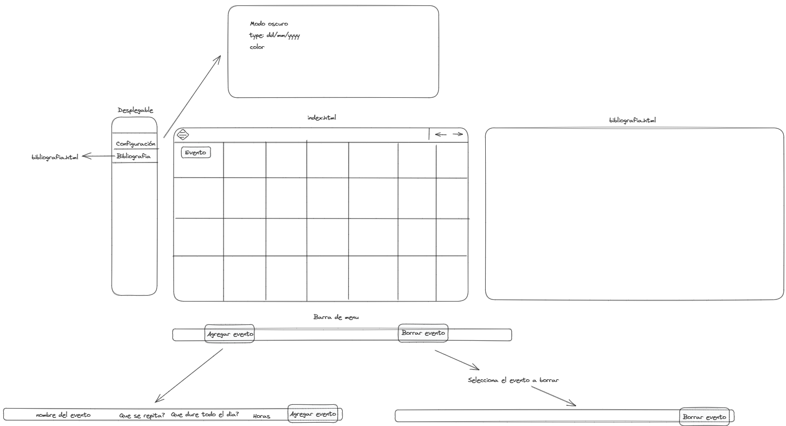

Idea
A la hora de ser productivos necesitamos un calendario, donde minimize al máximo los estímulos visuales, para simplemente tener a la vista lo que tenemos que hacer. Con esta idea en mente nace Duit.
A la hora de ser productivos necesitamos un calendario, donde minimize al máximo los estímulos visuales, para simplemente tener a la vista lo que tenemos que hacer. Con esta idea en mente nace Duit.
espacio que no se hacer tremenda cutrada(provisional)
El concepto de hacer un calendario surge en un inicio de la falta de alternativas lo suficientemente accesibles para que dos o más personas puedan accerder a un mismo servicio de forma rapida y eficiente.
Anteriormente probamos herramientas como Notion o Google Calendar, pero el concepto de poder abrir una pestaña de navegador y ver automaticamente las diferentes tareas y entregas futuras con poner solo un link nos llamo bastante la atención.
 Los lenguajes que se han usado para este proyecto han sido:
HTML para toda el exoesqueleto de la pagina web.
CSS En los estilos y la decoración de principalmente esta pagina de Bibliografia
JavaScript Para todo el funcionamiento interno del calendario.
De momento ninguno.......
Minimalista, visual y funcional.
Añadir tarea......